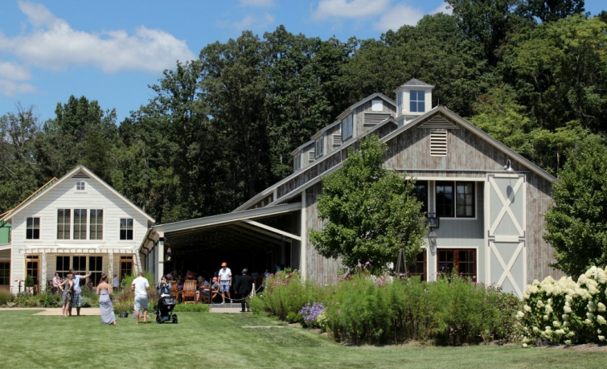
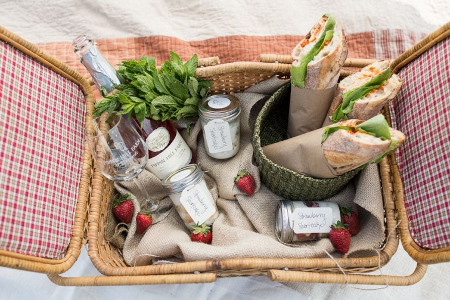
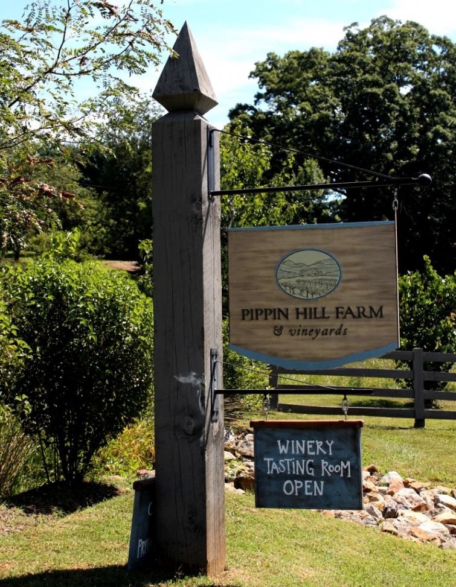

.png)
.PNG)
.PNG)
.PNG)
.PNG)
.PNG)
.JPG)
.JPG)
.PNG)
.PNG)


Our last touring day on our 11 day road trip began early with our visit to the Southern Living Idea House outside of Charlottesville, Virginia. When we finished seeing the house, we were hungry for lunch. Years ago, I had seen this picnic basket on Pinterest and thought it was perfectly done.

After a little reading, I found out that the picnic basket was from Pippin Hill Farm – a vineyard and event location also right outside Charlottesville. I knew we weren’t far from it when we were at the Idea House, so we decided to head there for lunch.
It might have been a 3 minute drive to get there. Yes, we weren’t far at all from it! (The sign matched the sign at Bundoran Farm from the Idea House.)
I told my husband, “Don’t be surprised if we can’t get in for lunch. It’s a Saturday, and I know they will be busy.” We pulled into the drive that ran between the vineyards.
 Such a gorgeous sight!
Such a gorgeous sight!
Their winery is located in a beautifully designed Geobarn.
When we saw the parking lot, we just knew we wouldn’t be able to get in for lunch.
Even so, I still wanted to take a look around the place.
We walked on through the rows of hydrangeas …
up to the wine- tasting veranda-terrace. Loved all the details of that area! There were wonderful cabinets everywhere you looked. The hostess told us that they were booked for the day for wine tastings, but they had a table inside available for lunch right then if we wanted. 🙂
Since neither of us drink wine, we were thrilled to have a spot in the Farm Table room. On our way to being seated, we passed this great cabinet with that precious lamb. Isn’t he a beauty?!
We really liked the post and beam construction of this building. This was our view to the right of our table.
To the left was their wood burning oven.
And behind us was another bar area.
(After all, it is a winery. 🙂 )
Here was the menu for our lunch.
After we ordered, they brought a bottle of water and a couple of glasses to the table.
In no time, we had our food. 🙂
My husband had the Pippin Sliders with fries,
and I enjoyed their croque monsieur.
We both shared a jar of delicious house-made blackberry sorbet.
Yummy!
After our lunch, we stopped in the granary where they were setting up for an evening’s event.
Gorgeousness everywhere!
Next we wandered around the grounds of Pippin Hill farm.
The room in which we dined inside was in that white building below.
This is a view of the entire wine tasting terrace. Quite a large building!
And another even wider view. 🙂
We wandered over to some of the rows of grapes planted there.
The plants were full of them almost ready for picking!
We finished checking out the grapes and then made our way back through the flower beds towards the car.
One last look at the view of farms and mountains there.
And that was the end of our time at lovely Pippin Hill Farm. Before we headed back to the interstate that afternoon, we decided to drive a bit looking for author Jan Karon’s old farm. I have already written about that here, but I wanted you to see where it actually fit into the road trip for us.
As we were driving along on the country road near Ms. Karon’s former farm, we saw a sign advertising Walton’s Mountain. Having grown up with 9 years of watching the Walton children grow up on my television set, we just had see what this place was. So one more adventure led us here to Schuyler Mountain, Virginia.
This was Walton’s Mountain Country Store. The bed and breakfast is not in operation anymore, and they do not allow photography inside.
From the sign you can tell there were quite a few Walton related goods inside. We bought a couple for gifts.
Behind the general store is the home that the creator of the Walton’s, Earl Hamner, grew up in. Across the street is the actual museum inside the elementary school that he attended. (You can see a video of a visit to the museum here.)
And that was our final stop for the road trip…3,400 miles from Georgia to Charlottesville to Yale to Maine and Vermont, back to Yale, back to Charlottesville, and ending with the Waltons. 🙂 Then it was back home to Georgia. Thank you so very much for traveling with us to all these diverse places.
The blog returns to “normal” this week as I share with you the fall decorating that has taken over the house here. There is so much of it, it will take a few posts to get it all in!
I hope to see you back here soon. 🙂
Until next time…


.PNG)
That was a fun trip too! My daddy thinks he has never had alcohol but he drank a mimosa at my brother’s wedding brunch. (We never told him it had alcohol.) I have to tell you, I have a glass of wine almost every night with dinner. Are you still my friend? Those sliders look delicious! If you make it to Dillsboro, there is a restaurant called Coach’s. They have THE BEST pork chop sliders!
———————————————————————
It was a very fun trip and covered a lot of ground. How funny that your daddy did not know the mimosa was alcoholic! Yes, you can still be my friend even if you do drink a glass of wine every night. 🙂 I think I have read that alcohol in moderation may actually have some health benefits. We will look for Coach’s the next time we go to Dillsboro. I think that is where the train station is that’s where you start the train ride through the mountains. Pork chop sliders sound like something all the guys around here would love!
Kelly
The Waltons was my favorite show growing up – how fun this is! Did you go into the house?
——————————————————————–
Wasn’t it a great show?! I had no idea it ran for 9 years until I started doing some research on it. No, we only went in the general store there. We had to get back on the road to head back home.
Kelly
Kelly – ending your tour with a visit to Walton’s Mountain – how wonderful! As I read this post, I was wondering if I took all your tour posts and mapped them out, what a great trip for my husband and I to take. You have definitely been a great guide and with your posts all the hard work has been done! Thank you for bringing us along with you.
———————————————————————
You are very welcome Julia. Thank you for “traveling” along with us in the posts! If you do use the posts as a guide, I would suggest stretching it out more so that it is not rush rush rush, and you will enjoy it more. 🙂 Make it a 3 week trip instead of a 2 week one, and definitely allow for more time in Vermont and in Charlottesville, VA.
Kelly
Thanks for a wonderful trip Kelly … I especially enjoyed the lunch!
I’ve added Pippins Hill Farm and Walton’s Mountain to my ever growing list of places I’d like to visit. It now includes many places I wouldn’t have known about if you hadn’t written about them! So thanks for that too!
Have a good week.
Rosemary
——————————————————————–
You are quite welcome Rosemary. 🙂 Pippin Hill Farm was so lovely. There was not a lot to see at Walton’s mountain, but if you are a lover of the old show, you would like the short stop there.
Hope you have had a good week!
Kelly
This was great, Kelly. Thank you for taking the time to put this all together for us. The photography was great. I enjoyed each and every picture. I think that winding path of beautiful hydrangeas gave me goose bumps! You chose a wonderful way to end your trip. Thank you for letting us tag along. Every post was always interestingly detailed. You are such a talented lady, and I am looking forward to what is yet to come!
Sherry
———————————————————————
Goodness what a nice comment Sherry! I am so glad you enjoyed reading all about our trip. There was a lot to see along those 3,400 miles! The hydrangeas at Pippin Hill Farm were unreal! Can you imagine being a bride walking down that path to be married out on that lawn? 🙂
Kelly
You don’t drink wine !!??
——————————————————————–
No, we are teetotalers here for the most part. My husband has never in his life had anything alcoholic. I had daiquiris in college and a little beer. I love fizzy drinks, so now the only alcohol I even really like is champagne. (My husband says of course I would like the expensive one. LOL)
Kelly
Thank you so much Kelly for sharing your travels with us. I love how you research all these places before you go and save us the trouble. (I do the same thing when traveling) I have enjoyed this road trip so much! I look forward to seeing how you decorate for fall.
———————————————————————-
Thank YOU for reading all the travel posts from the long trip. If you want to make the most of your time, you really should do the research ahead of time, right? Fall decorating is on the way!
Kelly
What a lovely winery! My mouth was watering, hoped you had ordered the croque monsieur(sp) which you did, then oh, the sorbet! EXACTLY what I would have ordered! How I would love that place, absolutely lovely.
I haven’t been able to read your posts much lately, with selling our house in less than a week, with the buyers wanting to be in by Thanksgiving, AND we have no where to move yet! A whirlwind the last few weeks, and since then we have been searching for temporary housing so we can build AGAIN! This “internet ” trip has been a great diversion from the chaos, so thanks for taking me along!
———————————————————————
It was all delicious…especially that sorbet, but let me just say, I was very tempted to get their cupcakes. It was a VERY hard choice. 🙂
How in the world did you sell a house in less than a week??? Amazing!! Good luck finding a place to live. How you at least have the land on which to build.
Kelly
What a wonderful trip you had, Kelly! I have enjoyed your posts about the trip very much. So many nice memories for you, your husband and son! I look forward to seeing those October decorations!
——————————————————————-
It did make for nice memories. Thank you so much for “coming along with us” through the posts. You all have been very good travelers! 🙂
Kelly
What fun! I enjoyed every post!
———————————————————————-
Thank you! I am so glad you enjoyed the trip. 🙂
Kelly
Wow! That was a long trip. Leaving the interstate and traveling the “back roads” is the way to go. Haha, at least for part of your trip. 😉 I wasn’t aware Pippin Hill had a lunch spot. It is very pretty and I love the design of the buildings. I haven’t been there (not a wine drinker either) but I would like to drive out there sometime for lunch and see the beautiful location. Our daughter got married at another vineyard close by. 🙂 We’ll have to make a little trip to the Walton’s museum too. Like you I grew up watching it too! Thank you for such detailed posts about your travels. I enjoyed every mile of it!! 🙂 I’m looking forward to getting some fall inspiration from your home!!
———————————————————————-
It WAS a long trip…the longest we have ever taken. We tried to avoid the interstate as much as we could. Yes, Pippin Hill Farm does do lunch! I really liked the geobarn that housed it all. Your lucky daughter to marry in a vineyard! We need something like that around here.
Thank you for reading all the road trip posts Gina. 🙂
Kelly
What a beautiful and fun trip. Thank you so much for sharing with us.
——————————————————————–
Thank you Kathy! I was happy to share it all with all of you. 🙂
Kelly
Hi Kelly,
Phew, that was a lot of miles. So worth the journey, you really saw some great places. I loved the winery and when we’ve visited the Napa wineries, we have often taken our picnic (purchased from a beautiful Dean and Deluca store on the main road) and then sat on the grounds of one of the vineyards. They invite picnics and the view is always so wonderful.
How fun to see the Walton compound. I’m surprised they wouldn’t let you take photographs inside the store. Still, the area looks wonderful. Did you have nice weather? It’s looks from the sight of the outdoor diners at the vineyard that the weather was wonderful.
Thanks for the tour.
xo,
Karen
———————————————————————–
It WAS a lot of miles! We saw a wide variety of places from the coast to the mountains. Loved that Dean and Deluca store you went to in Napa (bought cookies and coffee there.) I wish we had done a picnic like you did. Yes, the weather was clear almost all of the time, but hot. I felt like we took the Georgia heat and humidity with us – even to Maine. 🙁
Thank you for following along with us.
Kelly
AND I understand Jan Karon is writing ANOTHER book! Cannot wait! ( But I guess I will! Lol, )
——————————————————————-
Yes! Isn’t that wonderful??!!
Kelly
You knew I would love this! Gorgeous photography and scenery! I have indoor photos of the original Walton’s home. It was really nice.
———————————————
Yes I did! Thank you for the kind compliments Vicki. How fun that you saw the inside of the house!
Kelly
I have loved every single one of your posts about this road trip! Thank you so much for including us!!
———————————————————————-
I am so very glad that you had a good time on “our” trip Frances! You are more than welcome for being invited to come along.
Kelly
Kelly. Thank you so much for taking me along on your wonderful adventures.Your eye for detail is impeccable and, we share not only many similar tastes in decorating , we also enjoy good food!xo Annette
————————————————————————
The good food is a necessity of any road trip! Thank you for reading all the posts. I am happy that you liked the trip and all its variety of places to see!
Kelly
Gorgeousness! I love that walk lined with hydrangeas! I’m guessing they’re “Little Limes”. That barn set up for an event reminded me so much of my son’s wedding reception in a barn outside of Asheville.
——————————————————————–
I was very impressed with those hydrangeas too. If the barn for your son’s wedding was like the one at Pippin Hill Farm, then I know his wedding was gorgeous!
Kelly
Beautiful winery and a cozy spot for lunch! Were those chairs comfy? lol
I’ve only been to one winery, Mission Hill in British Columbia. Even though I don’t drink wine, they are a fascinating place to visit.
Your little bags of treats are so cute! Great idea, where do you get the orange tags?
———————————————————————–
The chairs were fine…or at least I don’t remember them to be uncomfortable. 🙂 I think you can still enjoy vineyards even if you don’t drink.
Thank you for the compliment on the trick or treat bags. I think the orange tags came from Hobby Lobby last year..or it could have been Michaels…not sure which one.
Kelly
Kelly,
What a fabulous trip! Pippin Hill Farm looks like so much fun. Thank you for taking us along and showing us all the nooks and crannies of all the places. I think all these little details make your blog so interesting to read. It’s all iabout the details. Makes me want to hit the road again.
DiAnne
———————————————————————–
DiAnne, thank you so much for reading all the posts from the trip and leaving your very thoughtful comments. It IS all about the details. That is what makes the places so unique, right?
Kelly
All just beautiful, Kelly…you’ve shown me places locally in Virginia that I want to visit and brought back memories of other New England places that I’ve loved – can’t ask for much more than that! Thank you!
——————————————————————–
Virginia has a ton of places to see! And I am glad to help you remember places from New England. Thank you for reading and commenting!
Kelly
What a great way to end a trip…with a winery! 😉
———————————————————————–
You are right Donnamae! It was a gorgeous pastoral place. 🙂
Kelly
I love taking a trip (if only in pictures) with you; you show me many many places I would never have ever thought to see if I get to make the trip (some day). We typically have tunnel vision when traveling with our destination in mind and the highway, never taking side trips. BORING! ha ha
———————————————————————
I guess I look at it as “We may never get another opportunity to visit here. So we better pack in as much a we can!” I am happy that you loved reading all about our travels.Perhaps we will travel on the West Coast next year with our other son. 🙂
Kelly
I have enjoyed each post on your journey. You should be a tour guide; you find all the best places! I would love to recreate your journey with my husband.
————————————————————————
A tour guide.. too funny! But it would be fun to be a food critic (and delicious as well!) If you recreate the trip, spread it out over more days than 11. It needs to be more relaxing to truly enjoy it. Vermont should get more time!
Kelly